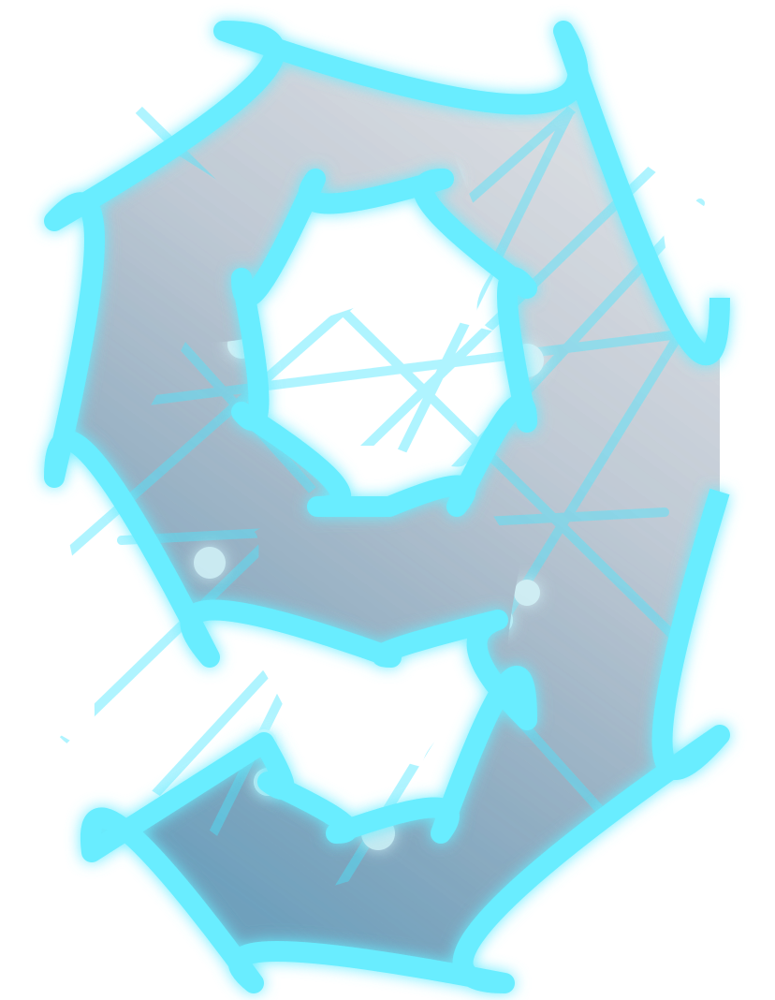

01 · Open source frequency
Personal frequencies · One signal
9591r
Five channels. One identity. Scroll once to tune into the next transmission.

Broadcast online
01 of 06
Personal frequencies · One signal
Five channels. One identity. Scroll once to tune into the next transmission.